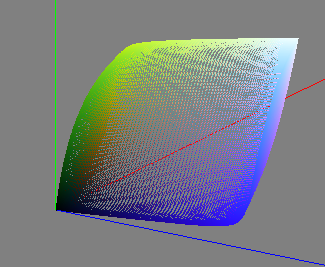
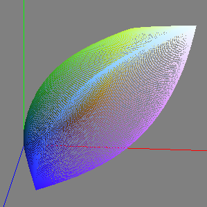
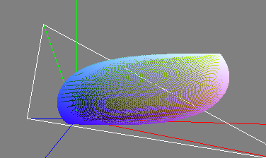
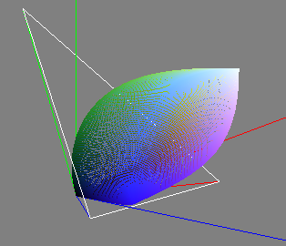

Gamut de Cores
Introdução
Esta página tem como objetivo apresentar um software que plote um Gamut de Cores nas bases CIE XYZ e CIE RGB.
Ferramentas
Software desenvolvido em c++11 utilizando o framework QT.
Desenvolvimento
Resultados
Gamut de cores CIE XYZ com D65


Gamut de cores CIE RGB com D65


Código fonte
Código fonte disponível no Github
Referências
http://www.brucelindbloom.com/
Perales Romero, Esther, et al. "A new algorithm for calculating the MacAdam limits for any luminance factor, hue angle and illuminant." (2005). [pdf]